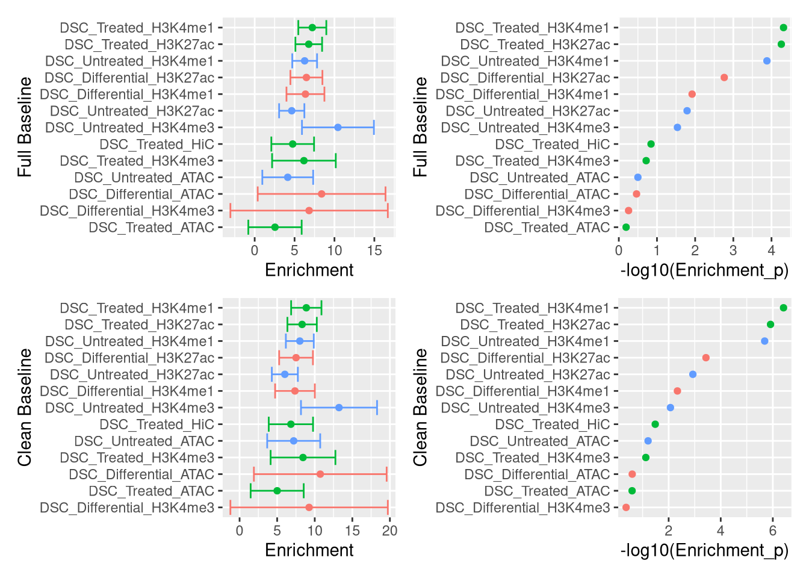

Last updated: 2019-12-04
Checks: 7 0
Knit directory: ptb_workflowr/
This reproducible R Markdown analysis was created with workflowr (version 1.4.0). The Checks tab describes the reproducibility checks that were applied when the results were created. The Past versions tab lists the development history.
Great! Since the R Markdown file has been committed to the Git repository, you know the exact version of the code that produced these results.
Great job! The global environment was empty. Objects defined in the global environment can affect the analysis in your R Markdown file in unknown ways. For reproduciblity it’s best to always run the code in an empty environment.
The command set.seed(20190313) was run prior to running the code in the R Markdown file. Setting a seed ensures that any results that rely on randomness, e.g. subsampling or permutations, are reproducible.
Great job! Recording the operating system, R version, and package versions is critical for reproducibility.
Nice! There were no cached chunks for this analysis, so you can be confident that you successfully produced the results during this run.
Great job! Using relative paths to the files within your workflowr project makes it easier to run your code on other machines.
Great! You are using Git for version control. Tracking code development and connecting the code version to the results is critical for reproducibility. The version displayed above was the version of the Git repository at the time these results were generated.
Note that you need to be careful to ensure that all relevant files for the analysis have been committed to Git prior to generating the results (you can use wflow_publish or wflow_git_commit). workflowr only checks the R Markdown file, but you know if there are other scripts or data files that it depends on. Below is the status of the Git repository when the results were generated:
Ignored files:
Ignored: (dellxps's conflicted copy 2019-09-18).Rhistory
Ignored: (dellxps's conflicted copy 2019-10-01).Rhistory
Ignored: .Rhistory
Ignored: .Rproj.user/
Ignored: .drake/
Ignored: cache/
Ignored: config/.Rhistory
Ignored: data/NA_character_.RDS
Ignored: data/ag_df.RDS
Ignored: data/annotations.h5
Ignored: data/big_hic_t.tsv.gz
Ignored: data/chr19_snpdata_hm3only.RDS
Ignored: data/endometrium.jpg
Ignored: data/eqtl_gwas_file.tsv.gz
Ignored: data/evd_list_chr19_hm3.RDS
Ignored: data/exons.bed
Ignored: data/fat_eqtl.tsv.gz
Ignored: data/gencode.v28.annotation.gff3.gz
Ignored: data/genes.bed
Ignored: data/gwas_file.tsv.gz
Ignored: data/gwas_ptb_file.tsv.gz
Ignored: data/gwas_ptb_file_i.tsv.zstd
Ignored: data/gwas_scz_file.tsv.gz
Ignored: data/hic_t.tsv.gz
Ignored: data/little_gwas_i.tsv.zstd
Ignored: data/matched_snp.RDS
Ignored: data/new_cache_log.RDS
Ignored: data/ngwas_df.h5
Ignored: data/old_cache_log.RDS
Ignored: data/ptb_cred.yml
Ignored: data/retd.RDS
Ignored: data/shuffeqtl_gwas_file.tsv.gz
Ignored: data/split_d.h5
Ignored: data/sub_gwas_ptb.tsv.gz
Ignored: data/susie_r.RDS
Ignored: data/ut_eqtl.tsv.gz
Ignored: old_index/
Untracked files:
Untracked: R/iupac.cpp
Untracked: R/new_config.R
Untracked: all_res.tar.gz
Untracked: analysis/23_and_me.Rmd
Untracked: analysis/BaselineLDSC.Rmd
Untracked: analysis/Gviz.Rmd
Untracked: analysis/LD.Rmd
Untracked: analysis/awd.RData
Untracked: analysis/dataset_SNPs_mismatches-reference.txt
Untracked: analysis/enrichment_analysis.Rmd
Untracked: analysis/finemap_plot.Rmd
Untracked: analysis/joint_annotations.Rmd
Untracked: analysis/ldshrink_drake.Rmd
Untracked: analysis/mws.RData
Untracked: analysis/test_knit_code.Rmd
Untracked: analysis/test_knit_code2.Rmd
Untracked: bd.txt
Untracked: code/
Untracked: config.yml
Untracked: config/config.org
Untracked: config/config_base.yaml
Untracked: config/data/rcc_env.yml
Untracked: config/four_features.yaml
Untracked: config/four_features_repro_ctrl.yaml
Untracked: config/four_features_repro_dec.yaml
Untracked: config/gwas.yaml
Untracked: config/iupac.yaml
Untracked: config/params/params.yaml
Untracked: de.txt
Untracked: extract_results_main.R
Untracked: extract_sigma_g.R
Untracked: false_positives.dsc
Untracked: marginal_joint.R
Untracked: output/all_res.tar.gz
Untracked: output/all_res/
Untracked: output/all_res2.tar.gz
Untracked: output/all_res2/
Untracked: output/fuma/
Untracked: output/plots/
Untracked: power.dsc
Untracked: presentations/
Untracked: ptb_cache/
Untracked: python/
Untracked: report.Rmd
Untracked: sigma_g.dsc
Untracked: sim_results/
Untracked: sub_drake.sh
Untracked: summarize_sigma_g.R
Untracked: tmp.txt.gz
Unstaged changes:
Modified: R/functions.R
Note that any generated files, e.g. HTML, png, CSS, etc., are not included in this status report because it is ok for generated content to have uncommitted changes.
There are no past versions. Publish this analysis with wflow_publish() to start tracking its development.
The Clean baseline gives better enrichment results than the “full” baseline
── Attaching packages ─────────────────────────────────────────────── tidyverse 1.2.1 ──✔ ggplot2 3.2.1 ✔ purrr 0.3.3.9000
✔ tibble 2.1.3 ✔ dplyr 0.8.3
✔ tidyr 1.0.0.9000 ✔ stringr 1.4.0
✔ readr 1.3.1 ✔ forcats 0.4.0 ── Conflicts ────────────────────────────────────────────────── tidyverse_conflicts() ──
✖ dplyr::filter() masks stats::filter()
✖ dplyr::lag() masks stats::lag()Full baseline is on the top and clean baseline is on the bottom

sessionInfo()R version 3.6.1 (2019-07-05)
Platform: x86_64-pc-linux-gnu (64-bit)
Running under: Manjaro Linux
Matrix products: default
BLAS/LAPACK: /usr/lib/libopenblas_haswellp-r0.3.6.so
locale:
[1] LC_CTYPE=en_US.UTF-8 LC_NUMERIC=C
[3] LC_TIME=en_US.UTF-8 LC_COLLATE=en_US.UTF-8
[5] LC_MONETARY=en_US.UTF-8 LC_MESSAGES=en_US.UTF-8
[7] LC_PAPER=en_US.UTF-8 LC_NAME=C
[9] LC_ADDRESS=C LC_TELEPHONE=C
[11] LC_MEASUREMENT=en_US.UTF-8 LC_IDENTIFICATION=C
attached base packages:
[1] stats graphics grDevices utils datasets methods base
other attached packages:
[1] patchwork_0.0.1.9000 forcats_0.4.0 stringr_1.4.0
[4] dplyr_0.8.3 purrr_0.3.3.9000 readr_1.3.1
[7] tidyr_1.0.0.9000 tibble_2.1.3 ggplot2_3.2.1
[10] tidyverse_1.2.1
loaded via a namespace (and not attached):
[1] tidyselect_0.2.5 xfun_0.10 haven_2.1.0
[4] lattice_0.20-38 colorspace_1.4-1 vctrs_0.2.0.9007
[7] generics_0.0.2 htmltools_0.4.0 yaml_2.2.0
[10] rlang_0.4.2.9000 later_0.8.0 pillar_1.4.2
[13] glue_1.3.1 withr_2.1.2 modelr_0.1.4
[16] readxl_1.3.1 lifecycle_0.1.0 munsell_0.5.0
[19] gtable_0.3.0 workflowr_1.4.0 cellranger_1.1.0
[22] rvest_0.3.4 htmlwidgets_1.3 evaluate_0.14
[25] labeling_0.3 knitr_1.25 httpuv_1.5.1
[28] crosstalk_1.0.0 broom_0.5.2 Rcpp_1.0.3
[31] xtable_1.8-4 promises_1.0.1 scales_1.1.0
[34] backports_1.1.5 DT_0.7.2 jsonlite_1.6
[37] farver_2.0.1 mime_0.7 fs_1.3.1
[40] hms_0.5.2 digest_0.6.23 stringi_1.4.3
[43] shiny_1.3.2 grid_3.6.1 rprojroot_1.3-2
[46] cli_1.1.0 tools_3.6.1 magrittr_1.5
[49] lazyeval_0.2.2 crayon_1.3.4 pkgconfig_2.0.3
[52] ellipsis_0.2.0.9000 xml2_1.2.2 lubridate_1.7.4
[55] assertthat_0.2.1 rmarkdown_1.13 httr_1.4.1
[58] rstudioapi_0.10 R6_2.4.1 nlme_3.1-140
[61] git2r_0.26.1 compiler_3.6.1